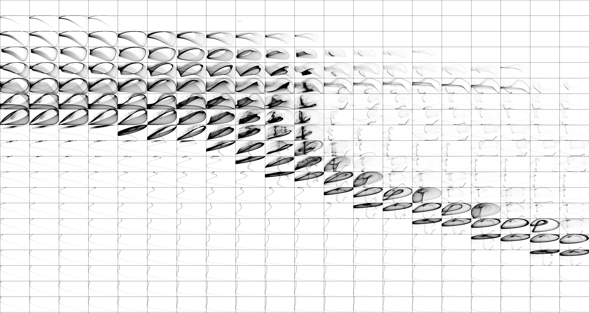

The Langford attractor is a 3-dimensional attractor which is continuous in the time domain and requires 5 parameters (7, if you count the (x, y) starting point). It tends to form a graceful disk, cylinder, or torus-shaped image.
Experimenting with different rotations about the x-axis can have a significant impact on image quality.
Unfortunately I was not able to locate many free sources of information on this attractor, though some are linked below.
Formula
\(x_{n+1} = x_n + ((z_n - b) x_n - d y_n) dt\)
\(y_{n+1} = y_n + (d x_n + (z_n - b) y_n) dt\)
\(z_{n+1} = z_n + (c + a z_n - \frac{z_n^3}{3} - (x_{n}^2 + y_{n}^2) (1 + e z_n) + f * z_n x_{n}^3) dt\)
I was not successful in locating many example parameters for the Langford attractor, so i had to search the 5-dimensional parameter space manually. As with many attractors, the more interesting examples are found near the "curves"" in parameter space. The image below shows a range of parameter space for parameters a, and b.
